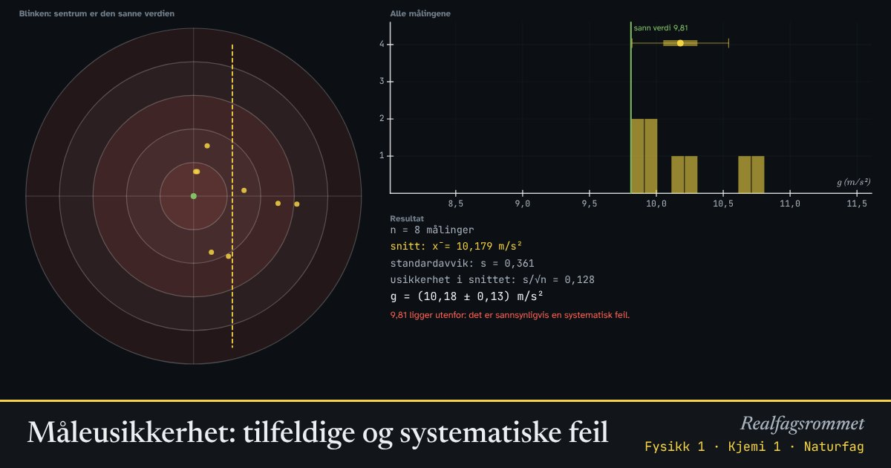

Måleusikkerhet: tilfeldige og systematiske feil
Ingen måling er helt nøyaktig. Tilfeldige feil sprer målingene rundt et gjennomsnitt. Systematiske feil flytter alle målingene samme vei. Her måler du tyngdeakselerasjonen g, som egentlig er 9,81 m/s².
Start animasjonen
Formler
Om animasjonen
Tilfeldige feil kommer for eksempel av reaksjonstid når du tar tiden. De gjør at målingene spres. Spredningen måles med standardavviket . Høy presisjon betyr liten spredning.
Systematiske feil påvirker alle målingene likt, for eksempel en klokke som går feil eller en linjal som er slitt. Høy riktighet betyr at gjennomsnittet ligger nær den sanne verdien.
Når du måler mange ganger, blir gjennomsnittet sikrere. Usikkerheten i gjennomsnittet avtar med . Men den systematiske feilen forsvinner ikke uansett hvor mange ganger du måler.
I blinken til venstre er sentrum den sanne verdien. Det er bare den vannrette retningen som betyr noe for g. Den loddrette spredningen er bare med for å gjøre det lettere å se.
Prøv dette
- Mål 10 ganger med stor spredning og ingen systematisk feil. Ligger 9,81 innenfor usikkerheten?
- Gjør spredningen liten og den systematiske feilen stor. Er målingene presise? Er de riktige?
- Hvor mange målinger trengs for å halvere usikkerheten i gjennomsnittet?
- Gi eksempler på systematiske feil i et forsøk der du måler g med en pendel.
Kompetansemål
- Naturfag: Utforske en egen problemstilling og argumentere for valg av metode
- Fysikk 1: Planlegge og gjennomføre forsøk, analysere data og trekke konklusjoner
- Kjemi 1: Måleusikkerhet i forsøk
- Biologi 1: Undersøkelser, data og resultater
Mer om forsøk, måleusikkerhet og programmering
- Naturvitenskapelig metode: hva bestemmer svingetiden?
- Programmering: modeller av naturfenomener
- Euler, Euler-Cromer og RK4